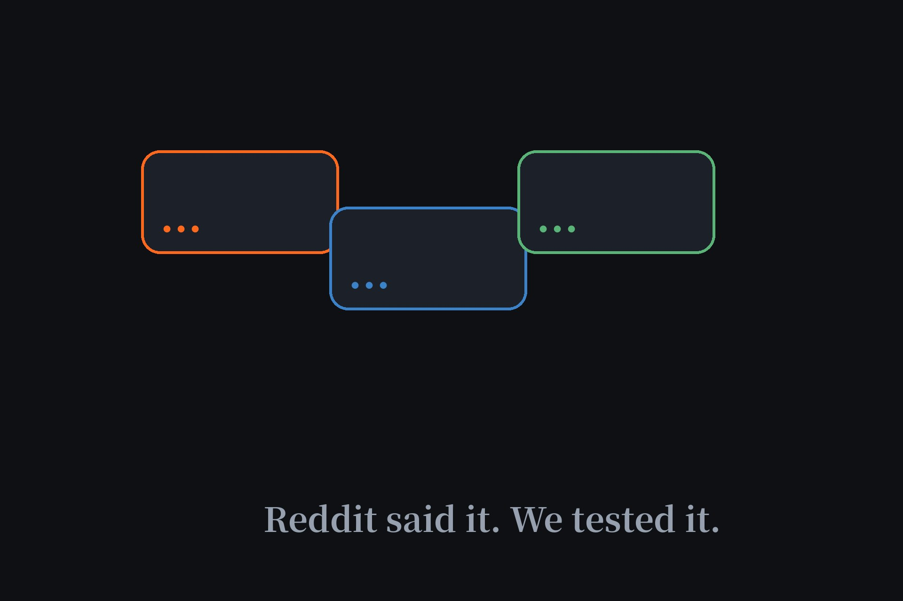

What Reddit Recommends for Free AI Chatbots, Verified Hands-On (2026)
Search "free ai agent reddit" and you'll drown in threads — r/ChatGPT alone has millions of members arguing about the best free chatbot. Reddit is excellent at "best free." It's terrible at "no sign-up," because almost nobody there filters for it. So I took Reddit's consensus picks and ran each through our logged-out test. Two survived. Here's the honest scorecard.

What Reddit actually recommends
Across the big threads, the consensus is stable: ChatGPT for versatility, Claude for writing and long context, Perplexity for research with citations, Gemini for Google Workspace users. For free tiers specifically, Microsoft Copilot gets the most love (free GPT-class access plus image generation), followed by ChatGPT's free tier, Mistral's Le Chat, and Perplexity's unlimited standard searches. That's the "best free" answer, and it's a good one — with one problem for our readers.
The problem: "free" isn't "no sign-up"
| Reddit's pick | Free? | No sign-up? | Our verdict |
|---|---|---|---|
| ChatGPT free tier | Yes | No — account required | Not listed |
| Claude free tier | Yes | No — account required | Not listed |
| Microsoft Copilot | Yes | No — Microsoft account required | Not listed |
| Perplexity free | Yes | No — account for full use | Not listed |
| Duck.ai | Yes | Yes — anonymous | Tier 1, listed |
| Perchance | Yes | Yes | Tier 2, listed |
Every mainstream pick Reddit loves requires at least a free account. That's fine for most people — but if you searched "free ai agent" hoping to skip registration entirely, four of Reddit's six favorites fail your actual requirement. Only Duck.ai and Perchance clear both bars, and both are in our directory because we verified them ourselves in a private window.
Duck.ai: the one Reddit and we agree on
Multiple threads specifically recommend DuckDuckGo's AI chat for anonymous access to strong models, and this is the rare case where the hype checks out. Our October re-test confirmed full chat functionality with zero account, plus identity stripping before prompts reach providers — a privacy architecture none of Reddit's other picks offer. It's our #1 ranked agent for a reason.
The unfiltered corner Reddit mentions (and why we skip it)
Threads about uncensored chatbots surface names like CrushOn AI — praised in late-2025 Reddit reviews for instant access with no registration — and Janitor AI paired with a DeepSeek API key. I checked both. They serve NSFW roleplay niches, and Janitor's real setup involves API keys and accounts. They don't meet the directory's standard, so they're verified and deliberately excluded — same policy as any other wall.
The takeaway
Reddit is the best focus group on the internet for "what's the best free AI chatbot." But its answers assume you'll create an account, because nearly everyone there already has. If your requirement is stricter — no account, no email, no trace — run Reddit's shortlist through the filter on this page first. Two names survive it, and they're the two we've had listed all along.
FAQ
What is Reddit's most recommended free AI chatbot?
Reddit consensus puts ChatGPT first for versatility, Claude for writing, and Perplexity for research. But all three require free accounts — Reddit rarely filters for no-signup, which is the gap this verification covers.
Which Reddit-recommended chatbots work without signing up?
Duck.ai is the standout: multiple Reddit threads recommend it specifically for anonymous access, and our own testing confirmed full functionality with no account. Perchance also works without signup, with weaker models.
Why don't you list CrushOn AI or Janitor AI?
Both come up in Reddit threads about unfiltered chatbots, but they serve NSFW roleplay use cases and carry account or API-setup requirements. They don't meet our directory's standard, so we verified the claims and left them out deliberately.